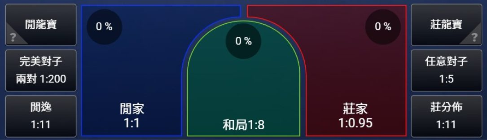
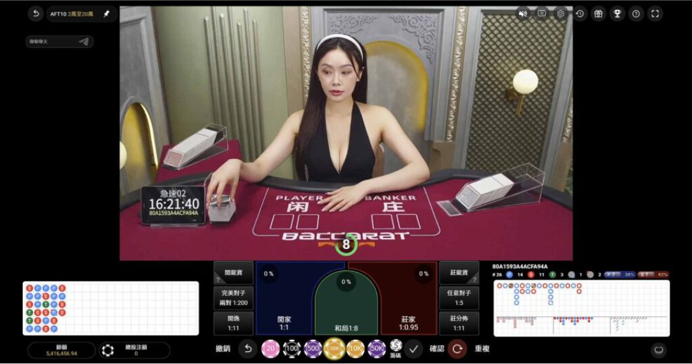
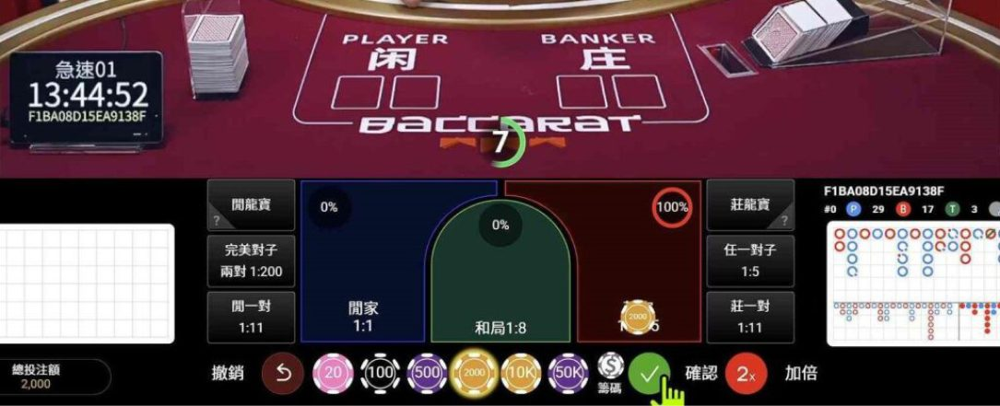
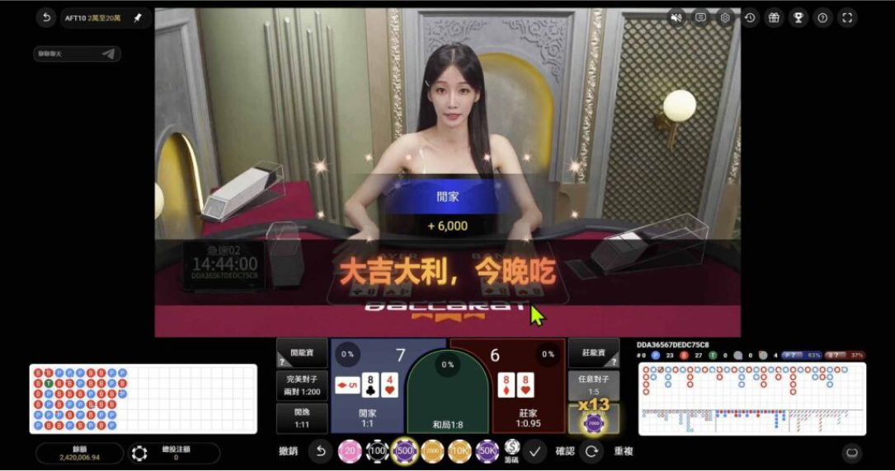

百家樂試玩怎麼玩？真人百家樂規則、百家試玩步驟與JP百家樂特色
JP百家樂 試玩怎麼玩？完整解析 真人百家樂 規則、百家試玩 操作教學、點數計算、派彩方式與常見玩法，帶你了解 百家樂試玩 流程、JP真人百家 特色、遊戲介面及免費試玩注意事項，新手也能快速掌握玩法與操作重點。
百家樂試玩是什麼？
百家樂試玩是透過模擬模式熟悉百家樂規則與操作流程的方式，部分遊戲提供虛擬籌碼，讓新手不必使用真實金錢，也能了解莊家、閒家、和局、點數計算及補牌規則。相較於正式遊戲，百家試玩更適合初次接觸真人百家樂的使用者，協助認識投注區域、派彩方式與開牌流程。不過，並非所有平台都提供免費試玩，部分可能需要註冊或登入，實際功能應以官方資訊為準。此外，百家樂試玩僅供學習與熟悉操作，無法預測下一局結果或提高勝率，應視為了解遊戲機制的工具，而非獲利保證。
真人百家樂規則教學
真人百家樂由真人荷官負責發牌，玩家可透過即時畫面觀看開牌流程，基本規則是比較莊家與閒家的最終點數，較接近9點的一方獲勝。對初次接觸的玩家而言，透過百家樂試玩熟悉點數計算、補牌條件、和局判定及派彩規則，有助於快速了解遊戲玩法與操作方式。
莊家、閒家與和局
真人百家樂主要分為莊贏、閒贏與和局三種結果，系統依照固定規則計算雙方點數，較高者獲勝，點數相同則為和局。莊家與閒家代表兩組牌，並非玩家身分。新手可透過百家試玩觀察開牌結果、熟悉投注區域及勝負判定方式。部分遊戲另提供對子等特殊投注選項，但基本規則仍以莊、閒兩組牌的最終點數為核心。

| 結果類型 | 基本說明 |
|---|---|
| 莊贏 | 莊家最終點數高於閒家 |
| 閒贏 | 閒家最終點數高於莊家 |
| 和局 | 莊家與閒家最終點數相同 |
點數計算與補牌規則
真人百家樂的點數計算方式相當簡單，A為1點、2至9依牌面計算，10、J、Q、K皆為0點，總點數超過9時只取個位數，例如7加8等於15，最終為5點。補牌方面，莊家與閒家先各發兩張牌，若任一方取得8點或9點的「天牌」，通常不再補牌；否則閒家依自身點數決定是否補牌，莊家則依點數及閒家第三張牌判定。透過百家樂試玩或百家試玩模式，新手可以觀察自動補牌與開牌流程，更容易掌握基本規則。
百家樂點數計算表
| 牌面類型 | 基本說明 |
|---|---|
| A | 計算為1點 |
| 2 ~ 9 | 依照牌面數字計算點數 |
| 10、J、Q、K | 全部計算為0點 |
| 總點數超過9 | 只取個位數，例如7＋8＝15，最終為5點 |
百家樂補牌規則表
| 判定情況 | 補牌規則說明 |
|---|---|
| 初始發牌 | 莊家與閒家先各發兩張牌 |
| 天牌8或9點 | 任一方前兩張合計8或9點，雙方停止補牌 |
| 閒家0 ~ 5點 | 沒有天牌時，閒家補第三張牌 |
| 閒家6 ~ 7點 | 閒家不補牌 |
| 莊家補牌 | 依莊家點數及閒家是否補牌、第三張牌點數判定 |
| 最終勝負 | 比較莊閒最終點數，較接近9點者獲勝 |
常見投注選項與派彩說明
真人百家樂常見投注選項包括莊家、閒家與和局，部分遊戲另提供莊對、閒對等附加投注。不同選項的派彩倍率、佣金制度及成立條件可能有所差異，部分免佣百家樂也採用特殊派彩規則，因此不能只憑賠率高低判斷勝算。新手可透過百家樂試玩熟悉各投注區域，並在百家試玩前查看遊戲說明，確認實際派彩、投注限制與結果判定方式，避免誤解不同玩法的規則。

| 投注選項 | 基本說明 |
|---|---|
| 閒家 | 通常為1賠1 |
| 莊家 | 傳統佣金制通常為1賠0.95 |
| 和局 | 常見為1賠8或1賠9 |
| 莊對、閒對 | 依遊戲版本與供應商規則而定 |
百家試玩怎麼操作？
初次接觸百家試玩，建議先確認遊戲是否提供免費模擬模式，再依序熟悉投注區域、虛擬籌碼、功能按鈕、開牌流程與歷史紀錄。透過百家樂試玩，新手可以了解真人百家樂的莊閒判定、點數計算及結算方式，並觀察每局遊戲的完整操作流程。若想進一步認識JP百家樂與JP真人百家的介面特色，也應先確認平台是否支援試玩功能。由於不同遊戲版本的操作方式與使用限制可能有所差異，以下整理四個常見試玩步驟，協助新手快速掌握基本操作。
步驟一：進入百家樂試玩遊戲介面
開始百家樂試玩前，先確認平台是否提供免費試玩、Demo或模擬模式。部分遊戲可直接開啟，部分則需要登入帳號。建議透過官方來源確認試玩入口、使用條件及所在地法律規定，避免誤入不明網站或正式投注模式。

步驟二：認識遊戲桌面與功能按鈕
進入真人百家樂模擬介面後，可先認識莊家、閒家、和局等投注區域，以及籌碼選擇、規則說明、遊戲紀錄與音效設定等功能。部分百家試玩版本還會提供歷史路單，但這些紀錄僅供查看過往結果，無法預測下一局勝負。

步驟三：使用虛擬籌碼體驗遊戲流程
若百家樂試玩提供虛擬籌碼，可透過模擬操作了解籌碼選擇、投注確認、開牌與結算流程。虛擬籌碼通常不具現金價值，也無法兌換獎金。操作前應確認目前為免費試玩模式，避免誤用真實餘額，並將模擬結果視為學習參考。

步驟四：查看開牌結果與試玩紀錄
每局百家試玩結束後，畫面通常會顯示莊閒點數、勝負結果及虛擬籌碼變化，部分版本也提供歷史紀錄，方便觀察補牌與結果判定方式。由於真人百家樂每局結果具有隨機性，過去的莊贏、閒贏或和局紀錄，並不能保證下一局出現相同結果。

真人百家樂有哪些玩法？
真人百家樂除了經典玩法，也有快速百家樂、免佣百家樂及其他特殊版本。各種玩法通常保留莊閒點數比較規則，但在開牌速度、佣金制度、投注選項與派彩方式上有所不同。透過百家樂試玩了解基本流程，並比較不同版本的遊戲規則與限制，有助於新手掌握玩法差異。
快速百家樂與其他特殊玩法
快速百家樂主要縮短每局等待時間，讓遊戲節奏更加緊湊；免佣百家樂則可能取消傳統莊家佣金，但針對特定獲勝點數採用不同派彩規則。部分真人百家樂版本還提供對子等附加投注選項。這些設計雖然增加玩法變化，卻不代表勝率更高，建議先了解基本規則，再確認各版本的派彩條件。
| 玩法類型 | 主要特色 | 注意事項 |
|---|---|---|
| 快速百家樂 | 縮短每局等待時間，遊戲節奏較快 | 留意投注時間與截止提示 |
| 免佣百家樂 | 可能取消傳統莊家佣金 | 特定獲勝點數可能採不同派彩規則 |
| 對子投注 | 部分版本提供莊對、閒對等附加投注 | 確認成立條件、派彩倍率與風險 |
| 其他特殊玩法 | 可能加入額外投注選項或特殊功能 | 依遊戲版本確認規則與限制 |
不同玩法的規則與限制
選擇百家試玩版本時，應先確認遊戲規則、投注限制、佣金計算與派彩方式，並留意是否提供免費模擬模式。不同真人百家樂玩法的規則與風險可能有所差異，不能直接套用其他版本的設定。透過百家樂試玩熟悉介面與操作流程，有助於理解各種玩法的實際差別，但無法保證正式遊戲的勝負結果。
| 玩法類型 | 主要特色 | 需要注意的事項 |
|---|---|---|
| 經典百家樂 | 傳統莊閒比較與佣金制度 | 莊家佣金及和局規則 |
| 快速百家樂 | 每局節奏通常較快 | 操作時間與下注截止提示 |
| 免佣百家樂 | 採用不同佣金或派彩制度 | 特定結果的派彩限制 |
| 特殊百家樂 | 可能加入附加投注或特殊功能 | 額外規則及不同的莊家優勢 |
JP百家樂是什麼？
JP百家樂以「經典玩法 × 創新娛樂」為特色，結合真人百家樂的莊閒規則、真人荷官直播與互動娛樂元素，讓傳統牌局呈現更多元的遊戲體驗。JP真人百家保留基本的點數計算與開牌流程，同時著重遊戲畫面及操作體驗。對初次接觸的使用者而言，可以先透過百家樂試玩了解遊戲介面、投注區域與基本規則，並利用百家試玩熟悉操作流程，進一步認識不同玩法的特色與使用限制。
基本特色
JP真人百家以經典真人百家樂規則為基礎，結合真人荷官直播、遊戲畫面與互動娛樂元素，呈現更豐富的牌局體驗。JP百家樂著重發牌流程、桌台呈現與操作介面的整體設計，讓使用者在熟悉莊閒玩法的同時，也能感受不同的視覺效果與娛樂特色。初次接觸時，建議先了解遊戲規則及功能限制，確認是否提供百家樂試玩模式。
| 特色項目 | 基本說明 |
|---|---|
| 經典遊戲規則 | 以真人百家樂的莊閒比較、點數計算及補牌規則為基礎 |
| 真人荷官直播 | 結合真人荷官影像，呈現遊戲進行與開牌過程 |
| 互動娛樂元素 | 著重直播呈現與互動體驗，實際功能依遊戲版本而定 |
| 桌台與介面設計 | 重視遊戲畫面、發牌流程及操作介面的整體呈現 |
| 百家樂試玩 | 可先確認是否提供模擬模式，以熟悉操作流程與使用限制 |
遊戲畫面與功能
JP百家樂的遊戲畫面可從真人荷官影像、莊閒投注區域、點數顯示及開牌流程等方面了解，並留意是否提供歷史紀錄、桌台切換與手機操作功能。對新手而言，若平台支援百家試玩，便可透過模擬介面熟悉籌碼選擇、功能按鈕與結果判定方式，進一步了解JP真人百家的操作特色。實際功能與試玩權限仍應以官方說明為準。

立即體驗JP百家樂試玩
想進一步了解JP百家樂的玩法與操作方式，可以先查看官方提供的遊戲規則、示範畫面及百家樂試玩資訊，熟悉JP真人百家樂的莊閒判定、點數計算與遊戲介面，並確認是否支援虛擬籌碼及歷史紀錄等功能。透過百家試玩認識基本流程，有助於新手了解JP真人百家與其他真人百家樂版本的差異。不過，試玩無法預測勝負或保證獲利，使用前仍應留意所在地法律、個人資料安全及相關風險。立即查看JP百家樂試玩的官方說明，掌握遊戲特色、操作方式與使用限制，再評估是否適合自己。
 免費試玩
免費試玩常見問題 FAQ
Q1：百家樂試玩需要註冊帳號嗎？
不一定，部分百家樂試玩版本提供免註冊模擬功能，讓新手直接熟悉遊戲介面、基本規則與操作流程；也有部分平台需要先登入會員帳號，才能使用試玩模式或查看遊戲內容。由於不同真人百家樂供應商的使用條件可能有所差異，建議事先確認是否需要註冊、驗證身分及提供個人資料，並以官方公布的規定為準。
Q2：百家試玩需要儲值嗎？
一般免費百家試玩不需要儲值真實金錢，而是透過虛擬籌碼模擬投注、開牌與結算流程，協助使用者了解百家樂試玩的操作方式。如果網站要求先儲值才能進入遊戲，應先確認該功能是否屬於真正的免費試玩，並仔細閱讀相關條款，避免將正式投注模式誤認為模擬體驗。
Q3：真人百家樂與一般百家樂有什麼不同？
真人百家樂通常透過真人荷官與即時影像呈現發牌、補牌及開牌過程，而部分一般百家樂版本則使用電腦動畫或其他數位方式顯示遊戲結果。兩者在莊家、閒家、和局及點數計算方面可能採用相近規則，但遊戲介面、每局節奏、投注選項與派彩條件仍可能不同。建議透過百家樂試玩或官方規則說明了解各版本差異，不要直接套用其他遊戲的規定。
Q4：JP百家樂有提供免費試玩嗎？
JP百家樂是否提供免費試玩，取決於實際遊戲供應商、平台設定及使用權限，並非所有版本都具備相同功能。想了解JP真人百家的遊戲介面與操作方式，可以先確認官方是否提供模擬模式、規則介紹或示範畫面。如果平台沒有明確標示免費試玩入口，應避免直接認定可以使用虛擬籌碼，並留意網站來源與相關使用限制。
Q5：百家樂試玩的虛擬籌碼可以換成現金嗎？
一般百家樂試玩使用的虛擬籌碼僅供模擬操作，不具有實際現金價值，也無法直接兌換成真實金錢。這類百家試玩功能主要用來認識投注區域、點數計算及遊戲結算方式，與正式使用真實金錢的模式有所不同。使用前建議確認虛擬籌碼的用途、使用期限及平台條款，避免誤解試玩點數的性質。